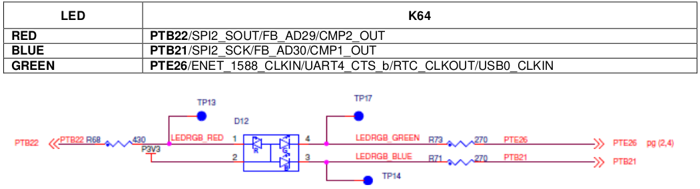
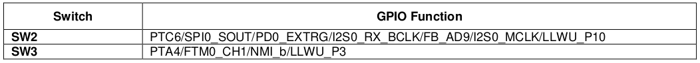
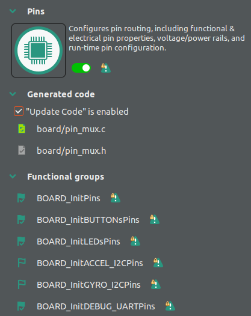
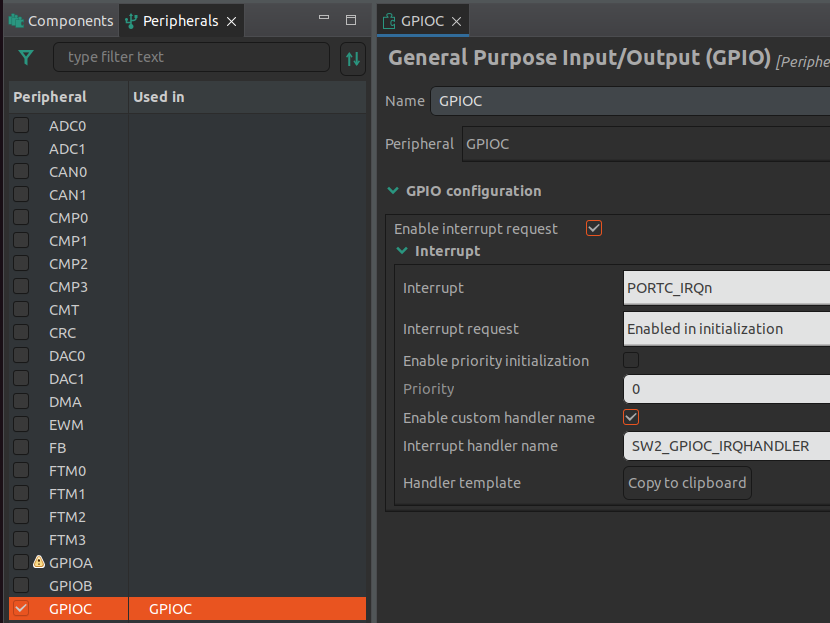

Lab 7 : GPIO and Interrupt
Seneca College SEH500 Microprocessors and Computer Architecture
Introduction
Documentation of the Cortex-M4 instruction set can be found here:
In our labs so far, we've been programming the processor directly using assembly language. In this lab, we'll explore combining assembly language with C programming language and how to use them interchangeablely in a program.
Freedom Board Tricolour LED
The Tricolour LED on the Freedom K64 board is connected to: - Red: Port B Pin 22 - Blue: Port B Pin 21 - Green: Port E Pin 26

Figure 7.1 Tricolour LED connection and schematics
Freedom Board Buttons
The Tricolour LED on the Freedom K64 board is connected to: - SW2: Port C Pin 6 - SW3: Port A Pin 4

Figure 7.2 Buttons connection
Procedures
Similar to the previous lab.
-
Open MCUXpresso then start a new C/C++ project based on the Freedom board model that you have.
-
In the new project configuration, we can keep everything to default as we won't be using the timer interrupt in this lab.
-
First, we'll setup the GPIO for the LED output using assembly code. Create a file called function.s in the source folder. Write the following code to it. In the code, create two functions, one for setting up the pins as GPIO output and another for turning the LED on and off.
If you are using the Freedom K66F board, the pin configurations is difference. Refer to the Freedom K66F board manual for the correct pin number..syntax unified @ unified syntax used .cpu cortex-m4 @ cpu is cortex-m4 .thumb @ use thumb encoding
.text @ put code in the code section
.global setup @ declare as a global variable .type setup, %function @ set to function type
setup: ldr r1, =0x40048038 @ System Clock Gate register mov r0, #0x00000400 @ enable gating for port B str r0, [r1] @ apply setting ldr r1, =0x4004A058 @ PTB22 PCR register address mov r0, #0x00000100 @ set to GPIO mode str r0, [r1] @ apply setting ldr r1, =0x400FF054 @ GPIOB PDDR register address mov r0, #0x00400000 @ set to output mode str r0, [r1] @ apply setting bx lr
.global function1 @ declare as a global variable .type function1, %function @ set to function type
function1: ldr r1, =0x400FF040 @ GPIOB PDOR register address led_off: mov r0, #0x00400000 @ set output to HIGH, LED off str r0, [r1] @ apply setting led_on: mov r0, #0x00000000 @ set output to LOW, LED on str r0, [r1] @ apply setting b led_off
If you are using the Freedom K66F board, the pin configurations is difference. Refer to the Freedom K66F board manual for the correct pin number. -
Next, place a "setup" and "function1" function prototype at the top of your code and function calls before the while loop in your main function. You can also comment out or remove the print statement.
-
Build and run your code in debug mode. Step Over (F6) the initial functions until you get to the setup function. Then Step Into (F5) the led_setup and the function1 function. While you are stepping through the code, the RED led should turn on and off. Take a photo of your led turning on and paste it into Blackboard.
-
Next, we'll setup an interrupt with the onboard switch to control the LED. To do that, we'll use the ConfigTools to help setup the interrupt as setting it up using assembly require knowledge of the vector table (a more lengthy process). Open the ConfigTools > Config Tools Overview windows. Under Pins Functional groups, enable BOARD_InitPins, BOARD_InitBUTTONsPins, BOARD_InitLEDsPins, and BOARD_InitDEBUG_UARTPins. Under Peripherals Functional groups, enable BOARD_InitPeripherals. Close and Update Code.

Figure 7.3
-
Next, open the ConfigTools > Peripherals Windows. On the left hand side, go to the Peripherals tab. Check GPIOC and check Enable interrupt request. Afterward, click Enable custom handler name and we'll name it: SW2_GPIOC_IRQHANDLER. Update code.

Figure 7.4
-
Repeat the same for switch 3 in GPIOA. Name the handler as SW3_GPIOA_IRQHANDLER.
-
Lastly, add the following two functions at the end of your program (outside of your main function) and comment out or remove the function call to the assembly code. Run your code and the LED should turn on and off as you press the buttons.
void SW2_GPIOC_IRQHANDLER(void) //Interrupt Service Routine for SW2 { // clear interrupt flag set by button SW2 connected to pin PTC6 GPIO_PortClearInterruptFlags(GPIOC, 1U << 6U); LED_RED_ON(); // turn ON RED LED } void SW3_GPIOA_IRQHANDLER(void) //Interrupt Service Routine for SW3 { // clear interrupt flag set by button SW3 connected to pin PTA4 GPIO_PortClearInterruptFlags(GPIOA, 1U << 4U); LED_RED_OFF(); // turn OFF RED LED }
Post-Lab Questions
Using the skills and knowledge acquired from this lab, answer the following post-lab question(s) on Blackboard. Due one week after the lab.
-
Answer all the questions in the lab in Blackboard.
-
Modify your code so all three colours of the LED will turn on and off for the two examples done in the lab.
Reference
[1] Yiu, J. (2013). The Definitive Guide to ARM® Cortex®-M3 and Cortex®-M4 Processors. (3rd ed.). Elsevier Science & Technology.